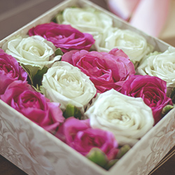
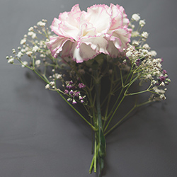
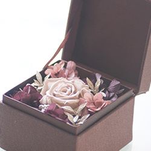

Preserved flower
プリザーブドフラワーとは
プリザーブドフラワーとは、生花にプリザーブド加工という特殊な加工を施し、 お花本来のみずみずしさや美しさはそのままに、お手入れなしで長期間飾っていただくことができる魔法のお花です。
製造の過程でさまざまな色に染色するので、お花本来の色合いを生かしつつ、自然には作れない鮮やかさも生み出すことができます。
赤やピンクはもちろん、青や紫、緑など自然界では珍しいとされているカラーも豊富にご用意しております。
お祝いごとや結婚式の華やかなイベントなどにも大活躍です！

ドライフラワーとの違い
ドライフラワーの特徴
・生花を麻紐で縛り、日陰で風通しの良いところに吊るすだけで手軽に作れます。
・ドライフラワー作りに特別な材料はいりません。
・生花から水分を抜いて作るため、手触りはカサカサと乾いていて、硬い感触があります。
・ドライフラワーは色落ちしてしまうため、生花が持つ鮮やかさはありません。
・香りは草が乾いたような独特のもので、寿命は3ヶ月から半年ほどです。
・お手入れには、防虫や落ちガラの掃除をする必要があります。

プリザーブドフラワーの特徴
・生花から水分を抜き、グリセリンが含まれている特殊な液体に浸して作ります。
・ドライフラワーと比べると作るのに手間が掛かり、材料も必要です。
・ドライフラワーと比べて生花に近い手触りがあります。
・色は鮮明で、生花では表現できないカラーを出すことも可能です。
・湿気や直射日光には弱いですが、正しく保存をすれば数年間美しさを保つことができます。
・お手入れは、ホコリ・水分・直射日光を避ければ特に必要ありません。
